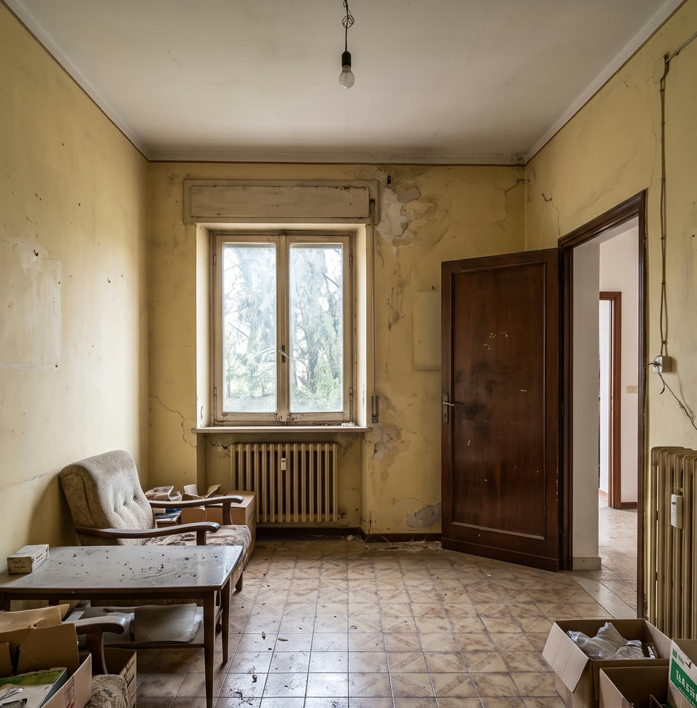
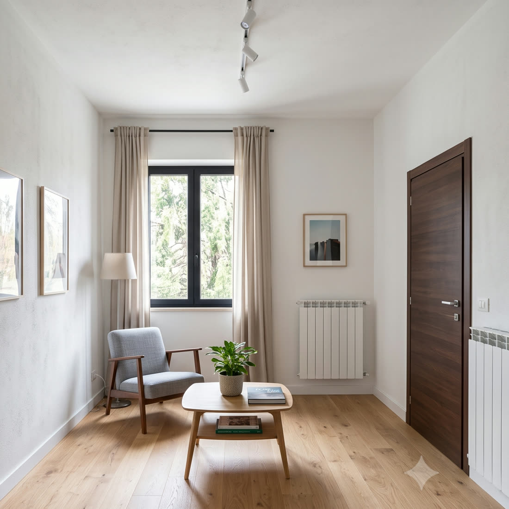

Chrome Extension
Before & after image comparisons, done right.
Align two photos by hand with precision controls, then compare them with a smooth draggable slider. Export as an image or a standalone interactive page — entirely in your browser, no account, no server.
Free, no account required. No ads, no tracking.


Drag the slider — this is Image Compare Studio's actual comparison view.
Features
Precise manual alignment
Drag to move, scroll to zoom in 15% steps, fine rotation controls, and horizontal/vertical flip — everything you need to line up two photos exactly.
Opacity overlay while aligning
Blend the after image over the before image at any opacity while you align, so you can see both at once.
Grid, guides & snapping
A toggleable grid overlay, center guides, and snap-to-center make precise, repeatable positioning effortless.
Draggable comparison slider
Reveal the after image with a smooth horizontal or vertical slider — keyboard-accessible, with an animated handle.
Side-by-side & onion skin
Switch to a side-by-side view, or blend both images together in onion-skin mode, whenever a slider isn't what you need.
Pixel-inspection magnifier
Zoom into individual pixels with a built-in magnifier lens to check fine detail and alignment accuracy.
Full-resolution export
Export as PNG or JPEG at full resolution (up to 10000×10000px), or as a standalone interactive HTML page you can share or embed anywhere.
Save & reopen projects
Every comparison — images, alignment, and viewer settings — can be saved as a project and reopened later, with autosave built in.
Private by design
No server, no account, no tracking. Every image and every setting stays on your device — the extension has no network permissions at all.
Privacy
Your data stays with you
Image Compare Studio has no server of its own — everything happens locally, inside your browser.
Read the full privacy policy for the details.
Ready to try Image Compare Studio?
Free on the Chrome Web Store — installs in seconds and works entirely in your browser.
Add to Chrome — it's free